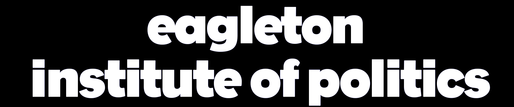

After the election results of 2020, an event known as the Tuesday After was held by Eagleton Institute of Politics to dissect and discuss the results of the election.
Eagleton Institute of Politics held an event known as The Politics of Water and Lead meant to pull roles of local and national government, and system vulnerabilities behind one of America’s most pervasive public health concerns.